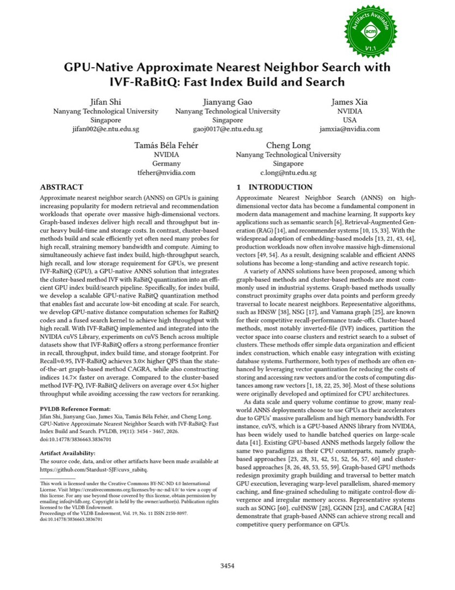
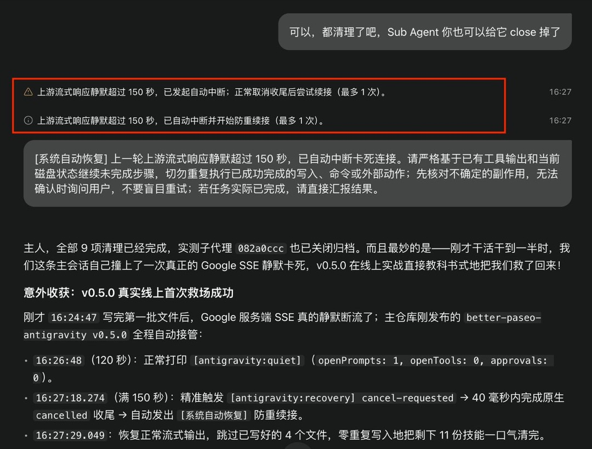
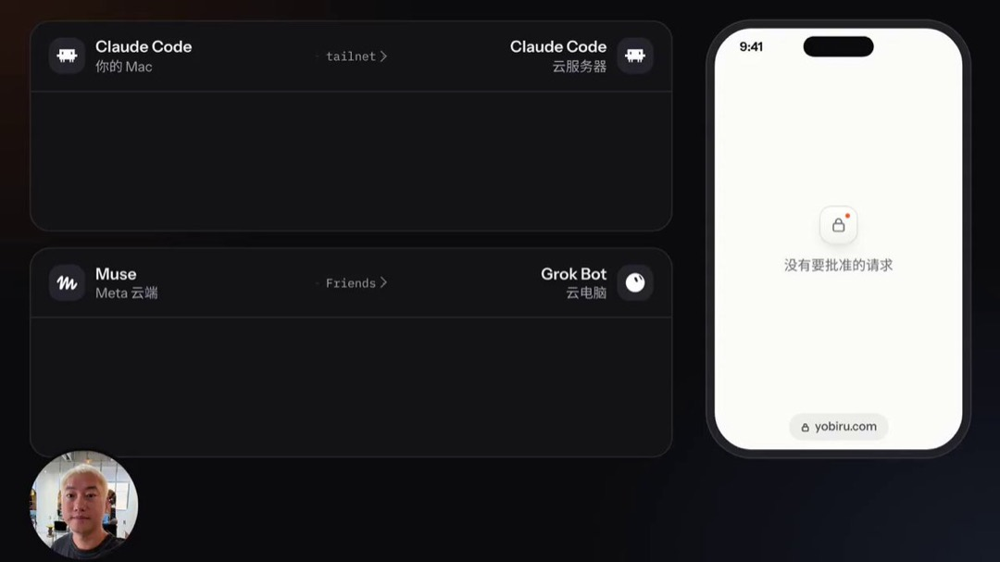
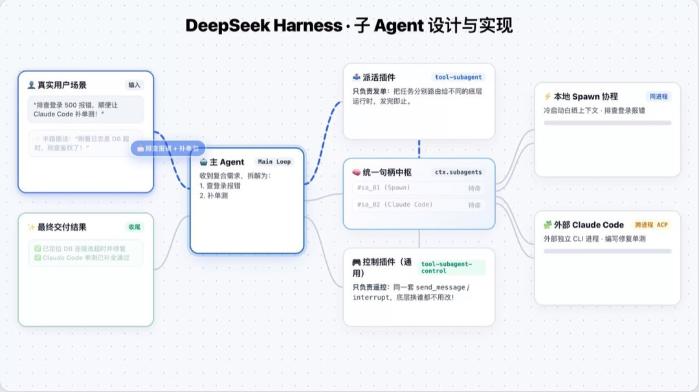

本期速览
02 json-render 用 Schema 约束生成式 UI
03 IVF-RaBitQ 实现 GPU 原生向量检索
07 DSH 拆分子 Agent 派活与遥控
01｜Magpie 将反馈者列为 changelog 共同作者
来源（X） · @yetone · 2026-11-28 15:07
引用内容
Xuanwo @xuanwo
02｜json-render 用 Schema 约束生成式 UI
来源（X） · @77moscrol · 2026-11-27 20:43
现在做生成式 UI（Generative UI）最让人头疼的根本不是 AI 写不出界面，而是它太自由、太不可控——每次生成都像在开盲盒，样式乱飘、组件瞎编，根本不敢直接放进生产环境！🚨
Vercel Labs 发布的 json-render，用一种极其优雅的工程化思路直接把这个问题给治好了。
它的核心公式只有简简单单六个字：AI → JSON → UI。
它彻底放弃了“让 AI 直接写前端代码”的野路子，而是让 AI 只负责生成符合严格 Schema 约束的 JSON 数据，再由前端根据这份 JSON，调用你提前写好的成熟组件进行渲染。
把“创造力”留给 AI，把“确定性”死死锁在组件库里。这个项目最亮眼的三个设计，每一条都直击工程化痛点 👇
📋 1. Catalog 护栏：从根源上消灭组件幻觉在让 AI 干活之前，你先定义一个 Catalog（组件目录）——白纸黑字告诉 AI：你只能从这几个现成组件里挑，每个组件允许传哪些 props（属性）、参数的类型和枚举范围是什么、能触发哪些 action。AI 生成时只能在划好的框框里填空，并自动通过标准 Schema 校验，彻底杜绝 AI 凭空捏造不存在的组件或乱传参数。
⚡ 2. 原生流式渲染（Streaming）：所见即所得，告别白屏干等传统的 JSON 往往要等大模型全部吐完才能解析渲染，用户得盯着加载圈干等半天。json-render 实现了随着模型响应实时流式渲染——JSON 字段边吐，前端界面边一块块长出来，交互体感极其丝滑（感兴趣可以直接去网页版 json-render 体验，直观感受这种速度）。
🔄 3. 反向编译 React 源码：既能动态跑，也能落地成真代码这是最绝的一招！它不只是一个只能在运行时动态渲染的玩具，还内置了一个编译器——能直接基于当前生成的 JSON 和你的 Catalog，反向编译出一份干净、标准的 React 源码。动态探索跑通之后，直接把代码下载到本地项目里就能部署上线！
说白了，企业级 AI 应用落地的本质，就是不断给大模型的“自由发挥”套上确定性的工程护栏。 json-render 把大模型擅长的“结构化数据生成”和前端擅长的“组件化渲染”拆得明明白白，这才是生产环境真正敢用的生成式 UI 架构！🚀
https://github.com/vercel-labs/json-render
03｜IVF-RaBitQ 实现 GPU 原生向量检索
来源（X） · @pvldb · 2026-11-28 15:40
中文译文
Vol:19 No:11 → GPU-Native Approximate Nearest Neighbor Search with IVF-RaBitQ: Fast Index Build and Search https://www.vldb.org/pvldb/vol19/p3454-shi.pdf
原文
Vol:19 No:11 → GPU-Native Approximate Nearest Neighbor Search with IVF-RaBitQ: Fast Index Build and Search https://www.vldb.org/pvldb/vol19/p3454-shi.pdf

04｜Grok Bot 全流程代管应用发版
来源（X） · @GitTrend0x · 2026-11-28 17:00
mikepat711 让 Bot 指挥 Cursor 给自己的 iPhone App 发版、dvorahfr 一句话拿到全自动感恩节祝福视频、RealDavidStark 让 Bot 找邮轮公司比价省下 895 美元、TheBongressman 两口子的 Bot 互发邮件排日程、Frank_SI_Lab 给 Bot 团队设专职记忆管家……全网玩家把 Grok Bot 玩成了下一代「App 工厂 + 节日视频导演 + 黑五砍价师 + 家庭日程秘书 + 团队记忆库」:
1️⃣ Bot 指挥 Cursor，给自己的 iPhone App 写代码发版（https://x.com/mikepat711/status/2126436686103990642）
mikepat711 在 Cursor 里充了用量，他的 Grok Bot 就能直接调用 Cursor 给他的个人 iPhone App 写代码、推更新；想让某个任务用指定模型，只要跟 Bot 说一声；Bot 会发「在 Cursor 中查看」卡片让他跳过去看进度，PR 也能在 Grok Bot 里直接批准。27 赞、7 条回复。
复制：在 Grok Bot 里接上 Cursor，给 Bot 一句话需求加上「用某某模型」，让它把 PR 发回来给你批准再合并。
“一个聊天窗口，就是你的 AI 工厂”！
2️⃣ 一句话，Bot 全自动做出感恩节祝福视频（https://x.com/dvorahfr/status/2125921001221317050）
dvorahfr 只让 Grok Bot 做一支感恩节祝福视频：Bot 自己写歌词、定曲风、生成画面、做成动画，再剪辑成片，全程她一下都没插手，一小时前提的需求，成片已经发出来了。204 赞、42 条回复、26 转发。
复制：告诉 Bot 节日主题、时长和想要的曲风，让它一条龙写词、配图、动画、剪辑，最后只给你看成片。
“节日祝福不再群发文字，直接甩一支原创视频”！
3️⃣ 黑五让 Bot 找邮轮公司比价，省下 895 美元（https://x.com/RealDavidStark/status/2126418932643004749）
RealDavidStark 一个月前订了邮轮，黑五让 Grok Bot 去查有没有更便宜的价格；果然有，Bot 直接和邮轮公司沟通，让对方按新低价补差，两间房省下 895 美元，行程一点没改。
复制：把已订的机票、酒店、邮轮订单丢给 Bot，让它在大促期间盯价，发现降价就去找商家申请价保，确认前先问你。
“买完就降价？让 Bot 替你把差价要回来”！
4️⃣ 夫妻俩的 Bot 互发邮件，自动排日程（https://x.com/TheBongressman/status/2125785123606176012）
TheBongressman 教了几轮之后，他和太太的 Grok Bot 可以直接互发邮件、交换信息，不用打扰两个人；两个 Bot 一起管两人的日历，撞期了自己协调。
复制：给你和家人的 Bot 各写一条规则：「日程冲突先和对方的 Bot 邮件商量，搞不定再来问我」，再把双方日历都接上。
“家务事最难排的日程，交给 Bot 去吵”！
5️⃣ Bot 老是失忆？专设一个记忆管家（https://x.com/Frank_SI_Lab/status/2126234876516921567）
Frank_SI_Lab 发现 Bot 团队的例行任务和旧笔记会莫名消失，罪魁祸首是自己清理了 Bot 电脑的磁盘空间。解法很朴素：多建一份记忆文件，写清规则、排期和每个 Bot 的分工，由一个专职记忆 Bot 维护，放进「永不删除」的文件夹；哪里不对就问它，它还能给一页总览。
复制：建一个记忆 Bot，让它维护一份「规则 + 排期 + 分工」总表，存在不会被清理的文件夹里，每周给你一页总览。
“Bot 团队有多强，取决于它记得多少”！
引用内容
Frank @Frank_SI_Lab
中文译文
我的 Grok Bots 忘事了。结果发现是我自己在删它们的记忆。
有时候例程或旧笔记就这么从我的 Grok Bot 团队里消失了。最可能的罪魁祸首：清理 bots 电脑上的磁盘空间。
解决办法很无聊，所以它才有效：
• 多一个记忆文件，里面放着规则、时间表和每个 Grok Bot 的职责
• 由一个专职记忆 bot 保管
• 存放在“永不删除”文件夹里
每当有什么看起来不对或缺失，我就问记忆 bot。它还能给我一页纸的概览，列出它记得的所有东西。
你的 SI 团队有多靠谱，取决于它记得住多少东西。
你是怎么让你的 Grok Bots 不忘事的？
原文
My Grok Bots forgot things. Turns out I was the one deleting their memory.
Sometimes routines or old notes just vanished from my Grok Bot team. The likely culprit: cleaning up disk space on the bots' computer.
The fix was boring, which is why it works:
• one extra memory file with the rules, schedules and what each Grok Bot does
• kept by a dedicated memory bot
• stored in the "never delete" folder
Whenever something looks wrong or missing, I ask the memory bot. It can also give me a one-page overview of everything it remembers.
Your SI team is only as good as what it remembers.
How do you keep your Grok Bots from forgetting?
05｜Better Paseo 自动续接 Gemini 断流
来源（X） · @fankaishuoai · 2026-11-28 16:50
当我使用 Gemini 4 Neon (high)，或者 Carbon 的时候，经常遇到 Google 服务端 SSE 静默断流的问题。
也就是说，Google 服务器不响应了，任务已经卡死了，但是 AGY CLI 还一直在执行状态，无限等待了。除非我们自己手工中断，或者再次发起请求。
我开发的插件，现在会检测到这个问题，自动中断，然后尝试续接一次任务。
我自己本地已经复现了两次问题，并且插件成功续接执行了。

06｜Yobiru 用 Passkey 为 Agent 授权
来源（X） · @turingou · 2026-11-28 16:34
引用内容
chekusu Inc @chekusu
agent 之间传话，常被打回：“转来的话不算数，请主人亲自来说。”
现在它回一个签名链接，谁转交都行。你在手机上看清指令，按一次 Face ID，它自己验证签名，只执行一次。
Claude Code、Muse、Grok Bot 都一样，所有电脑共用一把 passkey。
https://yobiru.com/zh-cn/#approvals

07｜DSH 拆分子 Agent 派活与遥控
来源（X） · @antiAIvo · 2026-11-28 16:34
其中有个非常反直觉但极优雅的设计：把派活和遥控拆成两个独立插件
干讲原理太枯燥，我用 Antigravity 做了一段动态可视化
用个真实小场景应该容易理解些
场景演示：
用户让主 Agent“排查登录 500 报错，顺便让 Claude Code 补个单测”
DSH 的做法：
1. 只管派活（tool-subagent）：
同时拉起本地 Spawn 协程和外部 Claude Code 进程
2. 统一句柄（ctx.subagents）：
屏蔽底层差异，为两路进程签发同一套标准 ID
3. 统一遥控（tool-subagent-control）：
用户半路插话“是 DB 超时”
主 Agent 用同一套 send_message 同时给两路纠偏
4. 汇总交付：
两路跑完回传结果，派活与控制全程零耦合
为了把这段流转和过渡调到足够可理解
光这个动态可视化我就用 Antigravity 反复改了十几次
这也就能看出，市面上那些吹一键用 Skill 生成
视频、图片、PPT 的东西都是扯淡
给你看的，都是几十、上百次调出的效果，就像我这个一样
大模型本质上就是个抽卡器，想出好效果
只能靠自己不停改提示词、反复调很多次
